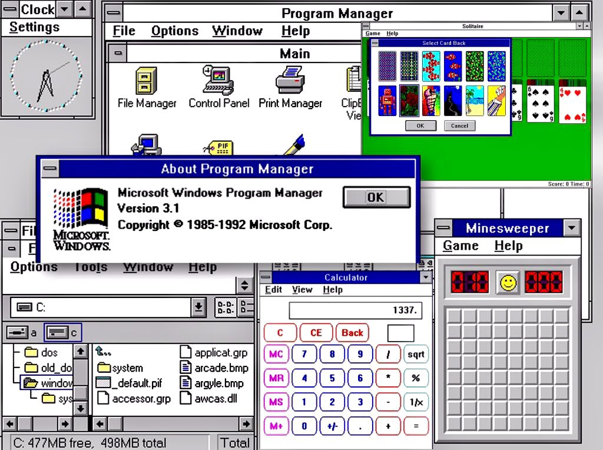
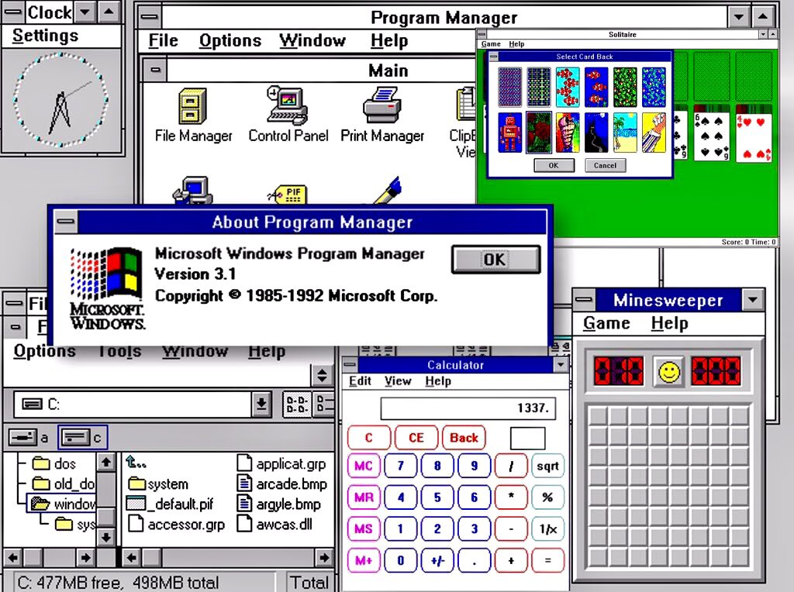

In 1985 after splitting up with IBM Microsoft had
finished developing their new operating system
called Windows which was a visual version of
MS-DOS. The os was released to mixed reviews of
people saying it used too much ram was really
slow. During the development, the team was behind
windows was under a lot of stress leading them
to release a product was generally negative
received. But this changed with the release of
Windows 3.1 which was released to critical
Acclaim as it was the first version of Windows to
truly be user-friendly leading to an influx of
people making more intuitive apps for the os this
created a state of innovation in the technology
sector in Washington state. Over time Microsoft has
boosted the growth of other companies and
industries in Washington state through funding
and support like those involved in cloud
computing and other technology-related
services as well as startups creating a thriving
and expansive technology ecosystem in the state.
After the success of Windows 3.1 other companies
in the tech industry came to Washington in order
to try and replicate the same success that Microsoft
with their products. Leading to the creation of
hundreds of start-ups, supporting industries, and
lots and lots of tech companies turning
Washington into the tech hub we know today.
 
